| [ Team LiB ] |
|
3.7 Second-Order BehaviorSecond-order models arise from systems that are modeled with two differential equations (two states). In this section we separately consider transfer functions that do not have "numerator" dynamics and those that do. Pure Second-Order SystemsConsider a linear second-order ODE, with constant parameters 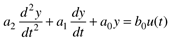 This is often written in the form 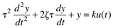 where (obviously a0 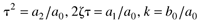 and the parameters are as follows: k is the gain (units of output/input), z the damping factor (dimensionless), and t the natural period (units of time). The second-order model shown in Equation (3.35) or (3.36) generally arises by changing a set of two first-order equations (state-space model) to a single second-order equation. For a given second-order ODE, there are an infinite number of sets of two first-order (state-space) models that are equivalent. Taking the Laplace transform of Equation (3.36), 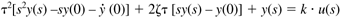 where y(s) indicates the Laplace transformed variable. Assuming initial conditions are zero, that is 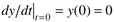, we find 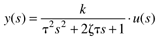 The characteristic equation of the second-order transfer function is t2s2 + 2zts + 1. We can find the roots (known as the poles) by using the quadratic formula 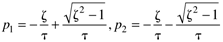 which yields the following values for the roots: 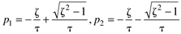 The following analysis assumes that z >0 and t > 0. This implies that the real portions of p1 and p2 are negative and, therefore, the system is stable. The three possible cases are shown in Table 3-2. Step ResponsesNow, we consider the dynamic response of second-order systems to step inputs (u(s) = Du/s), 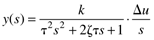 where Du represents the magnitude of the step change. Case 1: Overdamped (z > 1)For z > 1, the denominator polynomial, t2s2 + 2zts + 1, can be factored into the form 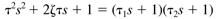 where the time constants are 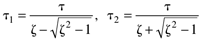
We can derive the following solution for step responses of overdamped systems,
Note that, as in the case of first-order systems, we can divide by kDu to develop a dimensionless output. Also, the dimensionless time is t/t and we can plot curves for dimensionless output as a function of z. This is done in Figure 3-8, which includes the critically damped case, as discussed next. Most chemical processes exhibit overdamped behavior. Figure 3-8. Step response of a second-order overdamped system.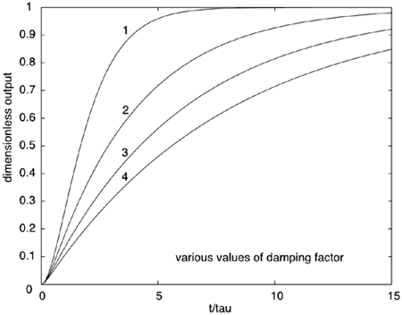 Case 2: Critically damped (z = 1)The transition between overdamped and under damped is known as critically damped. We can derive the following for the step response of a critically damped system 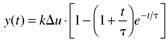 Notice that the main difference between overdamped (or critically damped) step responses and first-order step responses is that the second-order step responses have an S shape with a maximum slope at an inflection point, whereas the first-order responses have their maximum slope initially. The initial behavior for a step change is really dictated by the relative order of the system. The relative order is the difference between the orders of the numerator and denominator polynomials in the transfer function. If the relative order is 1, then output response has a nonzero slope at the time of the step input; the step response of a system with a relative order greater than 1 has a zero slope at the time of the step input. Case 3: Underdamped (z < 1)For z < 1, we find [from Equation (3.39)] that the poles are complex, 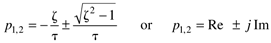 where the real and imaginary contributions are 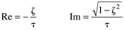 We can derive the following step response for an underdamped system,
where 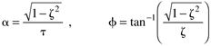 Again, dividing Equation (3.44a) by kDu, we can produce the dimensionless plot shown in Figure 3-9. Figure 3-9. Step response of a second-order underdamped system as a function of the damping factor (z). Interpolate between the curves for the behavior of other damping factor values.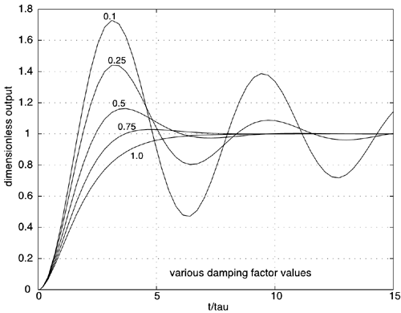 A number of insights can be obtained from Figure 3-9 and from an analysis of the step response equations. For z < 1, the ratio of the imaginary portion to the real portion of the pole [from Equation (3.39)] is 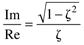 As the imaginary/real ratio gets larger, the response becomes more oscillatory (z becomes smaller). We also notice that a decreasing ratio corresponds to a larger negative value for the real portion. As the real portion becomes larger in magnitude (more negative), the response becomes faster. We use these insights to interpret pole/zero plots in Section 3.9. Underdamped Step Response CharacteristicsThe following common measures of underdamped second-order step responses are shown in Figure 3-10, and defined below: (1) rise time, (2) time to first peak, (3) overshoot, (4) decay ratio, and (5) period of oscillation. Figure 3-10. Step response characteristics of underdamped second-order processes.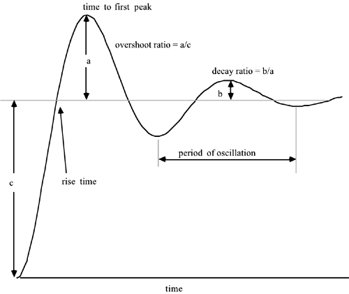 Rise time is the amount of time it takes to first reach the new steady-state value. Time to first peak is the time required to reach the first peak. Overshoot is the distance between the first peak and the new steady state. This is usually expressed as the overshoot ratio, as shown in Figure 3-10. Decay ratio is a measure of how rapidly the oscillations are decreasing. A b/a ratio of 1/4 is commonly called "quarter wave damping." Period of oscillation is the time between successive peaks. Second-Order Systems with Numerator DynamicsThe previous discussion involved pure second-order systems, where the relative order (difference between the denominator and numerator polynomial orders) was two. Consider now a second-order system with numerator dynamics with the gain/time constant form 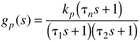 which is relative order one. The reader should show that the pole-zero form is 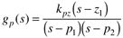 where the parameters are 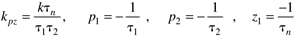 The gain/time constant form has the following time-domain response to a step input (see Exercise 4): 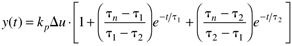 The reader should show that, if tn = t2, the response is the same as a first-order process. Example 3.6: Illustration of Numerator DynamicsConsider the following input-output relationship: 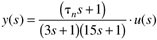 The unit step responses are shown in Figure 3-11. Notice that negative numerator time constants (corresponding to positive zeros) yield a step response which initially decreases before increasing to the final steady state. This type of response is known as inverse response and causes tough challenges for process control systems. Positive zeros are often caused by two first-order transfer functions, with gains of opposite sign, acting in parallel (see Exercise 5). Figure 3-11. Step responses of a second-order system with numerator dynamics.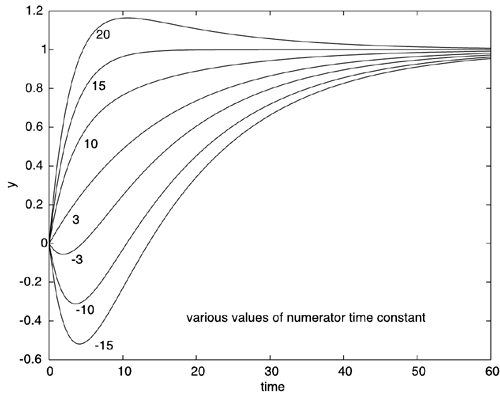 Notice also that a numerator time constant that is greater than the denominator time constant causes overshoot before settling to the final steady state. Also notice that the inverse response becomes "deeper" as the numerator zero (–1/tn) approaches a value of 0 from the positive side. |
| [ Team LiB ] |
|
 0)
0)